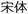
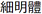
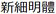
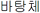

2.1. 対応言語と対応環境
出力可能な言語
出力できる言語は、次のとおりです。
言語グループ1
日本語、英語、中国語簡体字、中国語繁体字、韓国語、フランス語、チェコ語、タイ語
言語グループ2
スペイン語、ポルトガル語、ドイツ語、イタリア語、オランダ語、インドネシア語、アイルランド語、ポーランド語、スウェーデン語、ノルウェー語、マレー語、カタルーニャ語、ハンガリー語、ルーマニア語、ロシア語、ギリシャ語、ベトナム語、トルコ語
OS
対応OSとOSのロケール設定について説明します。
対応OS
SUSE Linux Enterprise for IBM System Z、IBM iを除き、SVF製品が対応しているOSが対応しています。
対応しているOSの詳細は、サポートサイトを参照してください。
SVF実行サーバーがWindowsの場合のロケール設定
SVF実行サーバーがWindowsの場合、OSのロケールは、日本語、英語、様式ファイルの言語のいずれかに設定します。言語グループ2の言語については、英語ロケールでの出力を推奨します。
インストール時と異なるロケールで利用するには、Windowsに使用したい言語のMUI（言語パック）をインストールする必要があります。
日本語、英語のロケールに設定した場合には、すべての言語が出力できます。様式ファイルの言語のロケールに設定した場合には、様式ファイルの言語に対応する帳票の言語のみ出力できます。様式ファイルの言語と出力する帳票の言語の対応については、「言語ごとの設定一覧」を参照してください。たとえば、フランス語を出力する場合は、日本語、英語、フランス語のいずれか、ポーランド語を出力する場合は、英語、日本語、チェコ語のいずれかに設定します。
SVF実行部製品と一緒に利用する製品によっては、サーバー側（SVF実行部製品側）および製品をインストールする環境で使用できるOSのロケールに制限があります。
以下にOSのロケールの制限を製品ごとに示します。
製品 | SVFサーバー側のロケール | 製品インストール環境のロケール |
|---|---|---|
Universal Connect/X | 日本語、英語、中国語簡体字 | |
UCX Single | 日本語、英語、中国語簡体字 | 日本語、英語、中国語簡体字（*1）（*2） |
SVF for Web/Client（*3） | 日本語、英語、中国語簡体字 | 日本語、英語、中国語簡体字（*1） |
SVF Connect for .NET Framework API | 日本語、英語、中国語簡体字、 中国語繁体字、韓国語、フランス語、 チェコ語、タイ語 | 日本語、英語、中国語簡体字（*1） |
SVF Client for .NET Framework API Plus | 日本語、英語、中国語簡体字、 中国語繁体字、韓国語、フランス語、 チェコ語、タイ語 | 日本語、英語、中国語簡体字（*1） |
中国語簡体字以外の帳票出力では、日本語または英語に設定する必要があります。
SVF実行サーバーがUNIX/Linuxの場合でも同様です。
サーバー側のロケールとクライアント側のロケール設定は同一にする必要があります。
プリンター機種
日本語以外の帳票出力に対応しているプリンター機種は次のとおりです。
PDF
EMF
EMFPLUS
Adobe PostScript
DotPrinter（ESCP）（*3）
FUJI XEROX DP Series
Hewlett-Packard PCL5
Hitachi Prinfina MANAGER PS
UNISYS JPP
CSV
EXCEL
SATO（*1）
Zebra
TEC B474（*2）
言語グループ2の言語（インドネシア語を除く）には対応していません。
英語、フランス語、スペイン語、ポルトガル語、ドイツ語、イタリア語、オランダ語、インドネシア語、アイルランド語、スウェーデン語、ノルウェー語、マレー語の出力に対応しています。
英語ロケールのプリンターで英語の出力のみ対応しています。
使用可能なフォント
使用できるフォントは次のとおりです。SUフォントもご使用いただけます。
フォントごとの制限事項は、「出力時の制限事項」を参照してください。
帳票の言語 | 全角フォント［代替用のSUフォント］ | 半角フォント［代替用のSUフォント］ |
|---|---|---|
日本語 | ［SU明朝］ ［SUゴシック］ ［SUP明朝］ ［SUPゴシック］ | Courier New［SUEuropeanR］ OCRB［SUOCR-B］ |
英語、インドネシア語 | Courier New［SUEuropeanR］ OCRB［SUOCR-B］ Arial Times New Roman Arial Unicode MS Century | |
中国語簡体字 |  ［簡体ゴシック］ | Courier New［SUEuropeanR］ OCRB［SUOCR-B］ |
中国語繁体字 |   | Courier New［SUEuropeanR］ OCRB［SUOCR-B］ |
韓国語 |  ［ハングルゴシック］ | Courier New［SUEuropeanR］ OCRB［SUOCR-B］ |
フランス語 | Courier New［SUEuropeanR］ OCRB［SUOCR-B］ Arial Times New Roman | |
チェコ語 | Courier New［SUEuropeanR］ OCRB［SUOCR-B］ | |
タイ語 | Angsana New Cordia New Courier New OCRB［SUOCR-B） TlwgMono（*1、*2） | |
ドイツ語、オランダ語、イタリア語、 ポルトガル語、スペイン語、ノルウェー語、 アイルランド語、カタルーニャ語、 スウェーデン語、マレー語 | Courier New［SUEuropeanR］ OCRB［SUOCR-B］ Arial Times New Roman Arial Unicode MS Century | |
ポーランド語、ハンガリー語、 ルーマニア語、ロシア語、 ギリシャ語、ベトナム語、 トルコ語 | Courier New［SUEuropeanR］ OCRB［SUOCR-B］ Arial Times New Roman Arial Unicode MS |
対応機種はPDF、Adobe PostScript、FUJI XEROX DP Series、UNISYS JPP、PrinfinaManagerPS、Hewlett-Packard PCL5。
フォントの埋め込みが必要です。